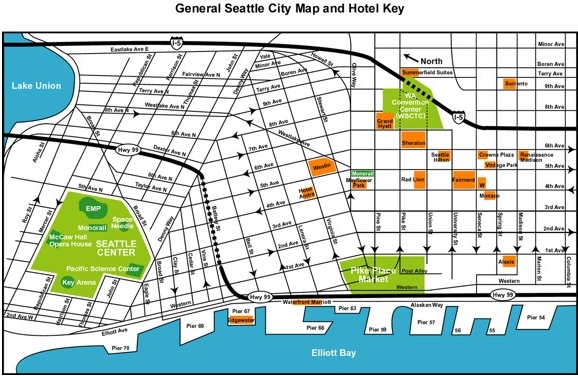
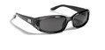
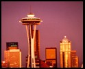
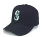
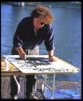
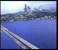

|
Location/Local Info
The 21st Open Grid Forum - OGF21
October 15-19, 2007
Grand Hyatt Seattle
Seattle, Washington

Seattle Visitor Attractions
PIKE PLACE MARKET - The oldest continually operating farmers market in the nation, this colorful market boasts a splendid array of seafood and produce stalls, restaurants, crafts and international foods.
WATERFRONT - 1 1/2 miles of shops, restaurants, excursion boats and maritime sightseeing. The waterfront area is also home to the Seattle Aquarium and Odyssey Maritime Discovery Center.
SEATTLE AQUARIUM - Located on the waterfront, the aquarium is a favorite for all ages, featuring the world's first aquarium-based salmon ladder, a coastal tidepool, sea otters and a giant Pacific octopus.
PIONEER SQUARE - Seattle's historic district is filled with boutique shopping, art galleries, nightlife activities, international dining and sightseeing opportunities.
WOODLAND PARK ZOO - Stroll through 92-acres of natural habitat exhibits and wildlife in one of the top ten zoos in the country.
SEATTLE ART MUSEUM - Located downtown, Seattle Art Museum houses over 21,000 art objects from the Pacific Northwest and around the world. Seattle Asian Art Museum is located in Volunteer Park.
BENAROYA HALL - This state-of-the-art 2,500 seat facility, completed in September 1998, is the home of the Seattle Symphony.
MARION OLIVER McCAW HALL - This stunning 2,800 seat performing arts facility is home to Seattle Opera and the Pacific Northwest Ballet.
BALLARD LOCKS - The locks serve as a watery elevator lifting vessels from the saltwater of Puget Sound to freshwater levels. Viewing windows at the locks allow visitors to watch salmon swim up the fish ladders.
PROFESSIONAL SPORTS - Seattle Seahawks NFL football, Seattle Mariners major league baseball, Seattle SuperSonics NBA basketball, Seattle Storm WNBA basketball and Seattle Thunderbirds Western League hockey.
BOATS, CRUISES & FERRIES - See the waterfront, visit Blake Island for an Indian-style salmon bake, ferry across Puget sound, enjoy a dinner cruise on the water or explore Elliott Bay on a harbor cruise.
PACIFIC SCIENCE CENTER - Hands-on mathematics and science exhibits for all ages. Boeing 3-D IMAX® Theatre and laser shows.
SEATTLE CENTER - 74-acre urban park, home of the Space Needle, Children's Museum, Children's Theatre, Experience Music Project, Seattle Opera, Seattle Repertory Theatre, Intiman Theatre, Pacific Northwest Ballet, Key Arena and various festivals. Accessible from downtown via a 90-second ride on the Monorail.
EXPERIENCE MUSIC PROJECT - An interactive music museum with high-tech exhibits of American popular music history, artifacts, hands-on equipment and live performances.
SCIENCE FICTION MUSEUM AND HALL OF FAME - Located within the Experience Music Project complex, this museum combines artifacts that immerse visitors in science fiction's "alternative worlds". The Hall of Fame honors the legends and luminaries that have shaped our visions of the future.
MUSEUM OF FLIGHT - Located 10-minutes south of Seattle, the museum's exhibits recount the history of commercial aviation, display vintage planes, portray aerospace future and houses the original Air Force One.
TRAINS, SEAPLANES & HELICOPTERS - Ride and dine in luxurious vintage rail cars, flightsee over Seattle or catch a seaplane to the San Juan Islands and Victoria.
DOWNTOWN SHOPPING - Seattle's downtown retail core, within easy walking distance of the Convention Center and hotels, offers a variety of stores to suit all tastes. Shoppers will enjoy Nordstrom's flagship store, the upscale shopping center Pacific Place and the REI flagship store complete with an indoor climbing pinnacle, rain booth and dirt trail for shoppers to test their outdoor equipment.
Seattle Fun Facts

|
Seattle sells more sunglasses per capita than any other major city in the nation!
|
The Space Needle is fastened to its foundation with 72 bolts, each of which is 9m (30 feet) long - must be a record!
|

|
The world's first espresso cart was established below the Seattle Monorail terminal at Westlake Center in 1980.
|
|
"The Wave", a ubiquitous sight at sporting events around the globe, was born by UW cheerleader Rob Weller at a University of Washington vs. Stanford University football game on October 31, 1981 in Seattle at U Dub's Husky Stadium - the Huskies won 42-31 (Go Dawgs!).
|
The 2001 Seattle Mariners won 116 games tying the 1906 Chicago Cubs for the most games won in a season.
|

|

|
The Happy Face first appeared in Seattle. (No, Forrest Gump didn't invent it!)
Tacoman Dale Chihuly, world renowned glass sculpture and founder of the prestigious Pilchuck Glass School, was the first person to be proclaimed a "Living National Treasure" by President George Bush in 1992.
|
The Mercer Island Floating Bridge (now I-90), built in 1950 was the first floating bridge in the world!
|

|
Average Daily Maximum Temperature
October
Fahrenheit: 60.2
Celsius: 15.6
Average Daily Minimum Temperature
October
Fahrenheit: 41.0
Celsius: 5.00
Average Monthly Precipitation
October
Inches: 3.14
Centimeters: 7.98
|